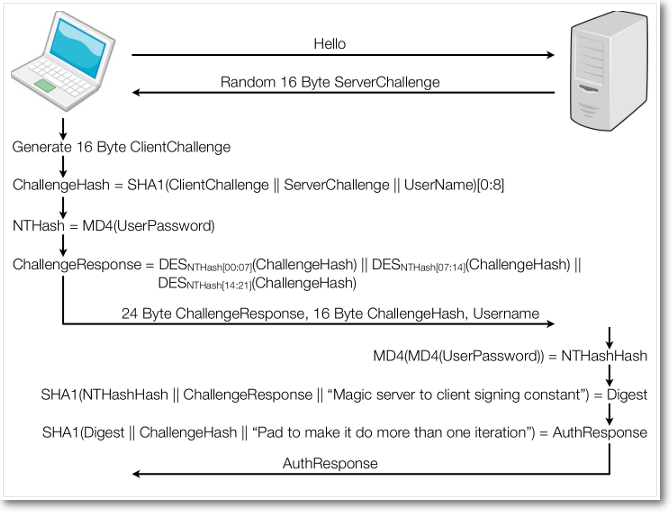
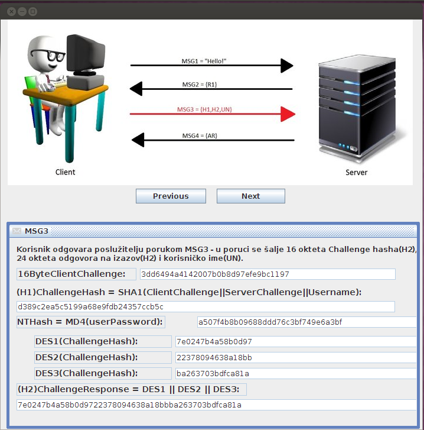
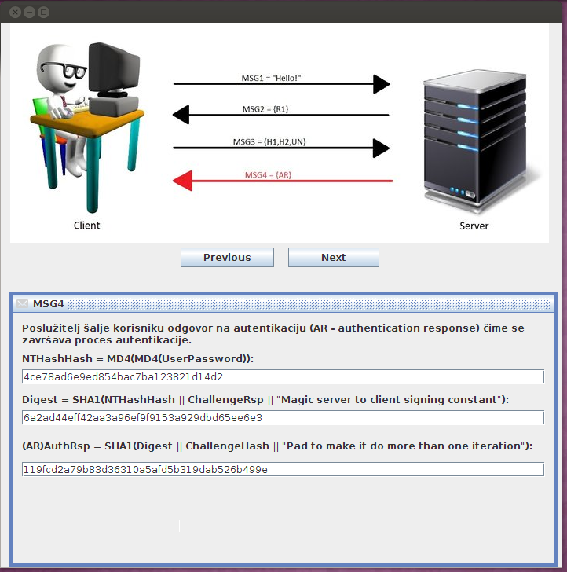

Razvijeni proizvod jest program napisan u Javi, a implementira Microsoft Challenge Handshake Authentication protokol korak po korak. Program se izvodi u pozadini intuitivnog korisničkog sučelja čija je svrha prikazati tijek komunikacije, tj. razmjenu poruka između poslužitelja i korisnika prilikom autentikacije korisnika pri čemu se primjenjuje MS CHA protokol. Program kroz korisničko sučelje prima dva argumenta – korisničko ime i lozinku, čime se simulira postupak prilikom prijave korisnika u sustav. Glavni cilj ovog proizvoda jest edukacija i isticanje nedostataka navedenog protokola kako bi ga se potpuno izbacilo iz uporabe ukoliko postoji potreba za sigurnim prijenosom i zaštitom podataka.
Ovdje se nalazi opis načina rada Microsoft Challenge Handshake Authentication protokola što je ujedno i način implementacije u razvijenom proizvodu. Protokol se zasniva na zastarjelim algoritmima MD4 i DES, što je ujedno i njegov najveći nedostatak, te na nasumično generiranim izazovima poslužitelja i korisnika. Proces autentikacije odvija se razmjenom ukupno četiri poruke.

Prvom porukom korisnik javlja poslužitelju da želi započeti postupak autentikacije. Nakon toga slijedi druga poruka u kojoj poslužitelj šalje izazov dug 16 okteta, a koji korisnik koristi u daljnjem procesu autentikacije.

Prije slanja treće poruke, slijedi glavni dio procesa koji se odvija na korisničkoj strani. Nakon što se generira korisnički izazov dug 16 okteta, korisnička aplikacija počinje sa stvaranjem odgovora na poslužiteljski izazov. Odgovor se sastoji od tri dijela:

Četvrtom porukom poslužitelj odgovora na pokušaj autentikacije korisnika. Da bi poslužitelj došao do odgovora, potrebna su mu dva podatka:
iz kojih primjenom SHA1 algoritma generira odgovor.
Iako se na prvi pogled protokol čini kompliciranim, vrlo je lako uočiti slabosti i nedostatke te iz toga zaključiti da protokol nije ispunio svoju glavnu namjenu – sigurnost korisničkih podataka. Iz svih razmjenjenih poruka, moguće je oporaviti bilo koji dio protokola. Međutim, jedina potrebna stavka jest NTHash koji je generiran primjenom MD4 algoritma nad korisnikovom lozinkom. Oporavkom te stavke, moguće se autenticirati kao korisnik ili dekriptirati sav njegov internetski promet. Najkritičniji trenutak jest slanje treće poruke u kojoj se, skriven u Odgovoru na izazov(engl. Challenge Response) nalazi upravo NTHash. NTHash podijeli se na tri dijela i iz tih dijelova se naprave tri DES ključa. S navedenim ključevima se enkriptira 3 puta isti tekst čime se dobije Odgovor na izazov dug 24 okteta. Osoba koja posjeduje paket koji sadrži Odgovor na izazov treba oporaviti NTHash. Najjednostavnije rješenje bilo bi podijeliti Odgovor na tri dijela i pokušati iz njih sastaviti NTHash pri čemu bi složenost postupka iznosila 3*256 (svaki DES ključ napravljen je od dijela NTHash-a dugog 7 okteta pa za svaki postoji 2(7*8) kombinacija). Ako se pri tome uzme u obzir još jedan propust protokola, složenost se smanjuje na 2*256 + 216. Naime, NTHash dug je 16 okteta pa za treći DES ključ ostane samo 2 okteta, a ostalih 5 se jednostavno popuni nulama. Moderne grafičke kartice, koje su pristupačne i običnom korisniku, sposobne su izračunati više od milijun DES kombinacija u sekundi. Dakle, bez obzira na duljinu i jačinu, svaka se lozinka može pogoditi za manje od jednog dana.
Prilikom pokretanja programa, otvara se glavni prozor na kojem se nalazi slika i dvije tipke. Pritiskom na tipku Start započinje simulacija komunikacije između korisnika i poslužitelja. U isto vrijeme se otvara novi prozor za prijavu u koji je potrebno upisati korisničko ime i lozinku. Ukoliko se neko od navedenih polja ostavi prazno, a pritiskom na tipku Login, otvara se prozor s upozorenjem.
Nakon uspješne prijave, nastavlja se simulacija komunikacije. Tipkama Next i Previous upravlja se trenutnim prikazom u prozoru. Osim slike, u donjem dijelu prozora, nalazi se opis trenutne poruke i kratko pojašnjenje tog dijela komunikacije. Nakon zadnje poruke, umjesto tipe Next pojavit će se tipka End koju je potrebno pritisnuti za izlazak iz programa.